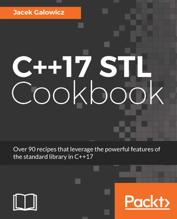

This article is about the C++17 STL Cookbook, which got published this week. After about 6 months of writing, I am happy that it is out the door and hope it helps and inspires its readers to write modern C++ code.

Why did I write this book?
Some day in October 2016, I was messaged by an acquisition editor of the British publishing company PACKT Publishing via LinkedIn. He asked me if I was interested in writing a book with the title “C++17 STL Cookbook”.
Two months earlier, my former employer shut down the whole office site together with the project and team I have been working on/with. Having been still unemployed and on the search for a new nice job, I had plenty of time thinking about the possible content of the book.
The frame/format of the book was fixed already because it should be part of the PACKT “Cookbook” franchise. Such cookbooks contain a lot of short recipes that explain how to solve very practical problems. This makes a lot of sense, because many other books first teach all the important aspects of their topic, and then let the user puzzle together themselves how to combine these in real life.
What is the general idea behind the book?
I made the general observation, that most C++ programmers write code that could rather be called C with classes than C++. Such programmers are happy to use data structures like std::vector, std::list, std::map, and so on, but when it comes to implementing standard tasks like for example filtering, accumulating, and so on, they fall back to handcrafted for loops.
So in real life, people rather write code like this:
… instead of this:
The for loop variant is not faster and not shorter, but it comes with the disadvantage that it is hardwired to arrays and vectors. If one wanted to do the same with lists, it would be necessary to rewrite this piece of code. The accumulate function has a data structure agnostic interface and just “does the right thing”. (Since C++17, there is also reduce(begin(my_vector), end(my_vector)), which does the same thing.) In contrast to the for loop, one does not have to “mentally execute it” in order to understand it.
A very interesting perk of C++17 is that it adds execution policies to a lot of STL algorithms. That means that it is now possible to trivially parallelize code that already uses STL algorithms just with one extra parameter. It would, therefore, make sense if C++ programmers would finally get used to all the carefully crafted and already tested helpers the STL has already been providing for decades now.
I regret that many C++ programmers ignore the vast possibilities that the STL provides. Especially in the embedded C++ area, people regularly fall back to “C with classes”.
A very old, but ironically still very applicable quote that I read in John Backus’ publication “Can Programming Be Liberated from the von Neumann Style?”:
[…] programming […] must always start again at square one, writing “for i := …” and “for j := …” followed by assignment statements sprinkled with i’s and j’s.
In 1977, he was talking about FORTRAN code, but his observation still applies to a lot of C++ code from today. Another very inspiring talk about the “C with classes” vs. “Modern C++” topic is Sean Parent’s talk where he presents his gather algorithm which is only an STL two-liner.
The C++17 STL Cookbook is obviously about C++17 and the STL. While the first chapter concentrates solely on the most interesting new language features and syntax sugar that were introduced with the new C++17 standard, I aimed to spread a lot of modern C++ philosophy with the rest of the book:
All recipes try to solve problems the STL way.
The content
In roughly 500 pages, the book covers the following topics:
The new C++17 features
An overview of the most interesting new C++17 language features:
constexpr if, structured bindings, initializers inifstatements, fold expressions, etc.STL Containers
A quick overview what kind of data structures we already have in the C++ STL, and what their characteristics are. The recipes show how to use them in C++17.
Iterators
This chapter explains the important concept of iterators in C++ and how to implement them. This includes the new perks introduced by C++17.
Lambda expressions
Lambda expressions were added in C++11 but evolved in every following standard. This chapter shows their current state and demonstrates what we can do with them. There is some functional programming style involved here.
STL algorithm basics
This chapter is a quick reintroduction to STL algorithms.
Advanced use of STL algorithms
After having reintroduced how standard algorithms work, this chapter demonstrates how to combine them in order to solve more complex tasks without reinventing the wheel (or
forloop) all the time.Strings, stream classes, and regular expressions
- The streaming library is an ancient and large, but very important part of the STL. This chapter shows how to solve the typical I/O tasks.
Utility classes
Time conversion,
std::optional,std::any,std::variant, automatic memory management with smart pointers, and random number generation.Parallelism and concurrency
It was always possible to write multicore programs with C++, but that was a rather operating system dependent task until C++11 introduced
std::task,std::future, and a lot of synchronization classes. This chapter gives a lot of examples how to write portable multicore programs.Filesystem
C++17 also introduced another sub-library that is solely about accessing and iterating file system structures in an operating system independent way. This chapter concentrates on example apps that can be implemented with this new addition to the C++ standard.
Book formats/Ordering
The book will soon be available in printed form, but the ebook can be ordered already.
If you want a DRM-free version of it, you should order it directly from PACKT. Of course, Amazon has the book, too.
Thank you
The best thing that can happen to you while writing a book is having Arne Mertz as the reviewer! No book comes without mistakes, but he did a great job finding even the most subtle, but critical ones.
Not to forget the C++ user group Hannover, where I got a lot of valuable feedback and inspiration.